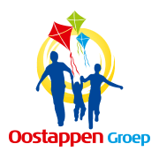
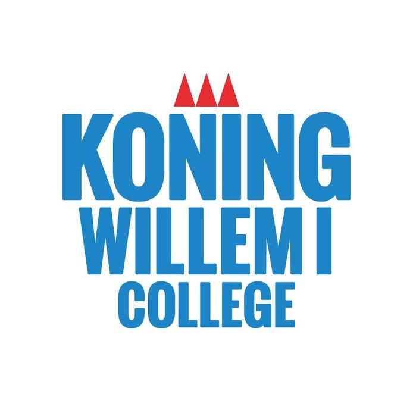

Professional Experience
-
Allround employee
La Marquise Chambres d'hotes de Luxe
2018-2020
- Check in and check out guests
- Front-office and back-office tasks
- Preparing and serving breakfast and lunch
- Housekeeping tasks
-
Tutoring students
2018-2020
-

Internship entertainment team
Oostappen Vakantiepark Prinsenmeer
2017
- Preparing and hosting activities for children
- Performing in shows
-
Sales employee
Hema
2015-2016
- Cashier
- Helping customers
- Ordening the store
Education
-
Bachelor of Arts in Creative Business
Breda University of Applied Sciences
2018 - now
- Member of the TV department
-

MBO Diploma Leisure & Hospitality
Cosmo Academy, KW1C Den Bosch
2017-2019
- MBO level 4
- Completed internships at a holiday park and hotel
-
HAVO High School Diploma
Philips van Horne SG Weert
2012-2017